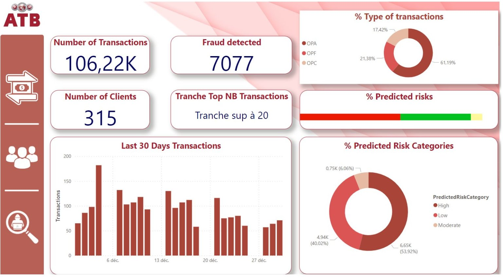
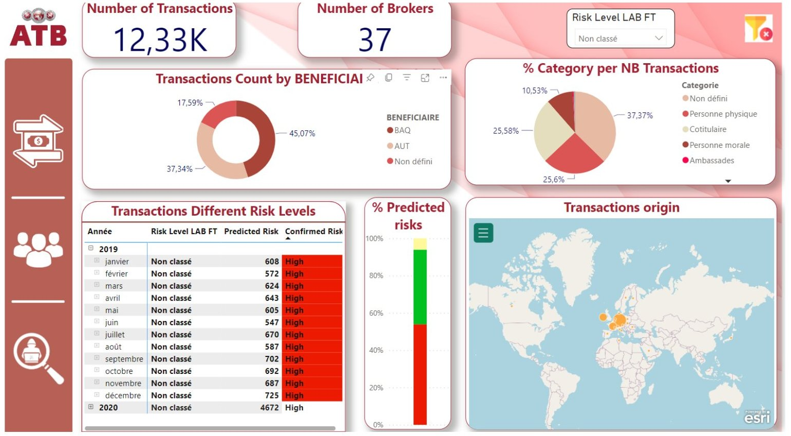
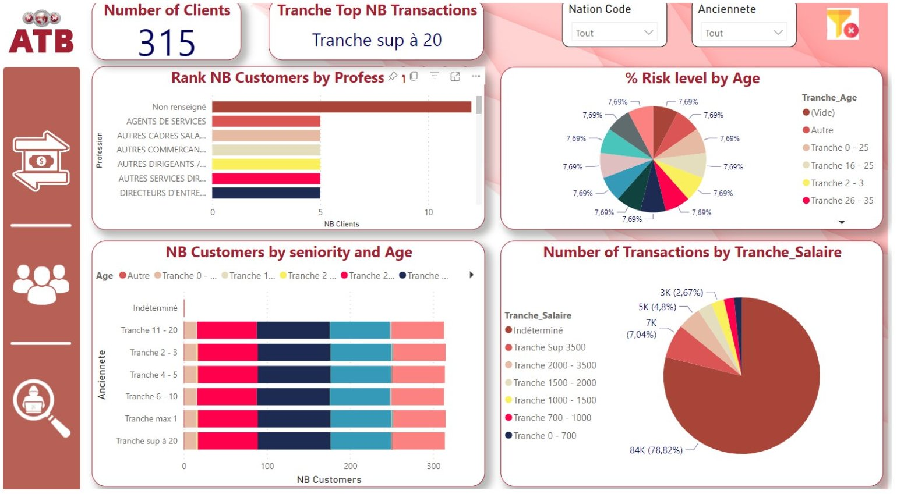
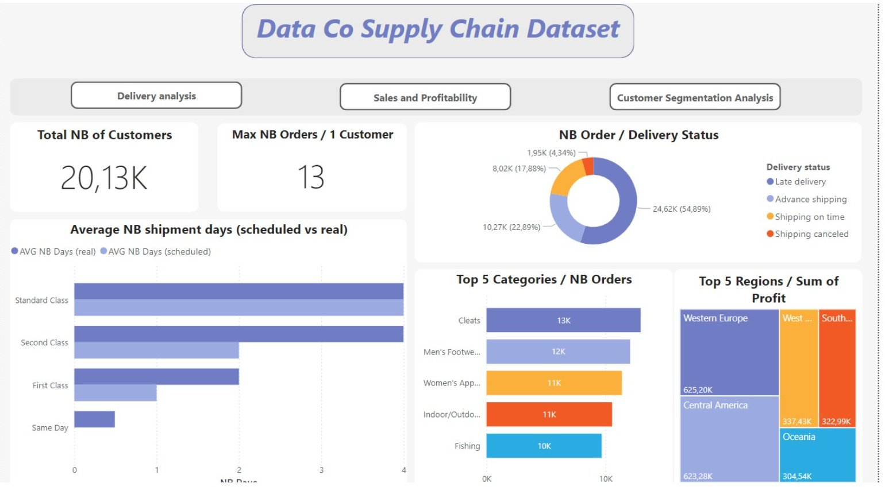
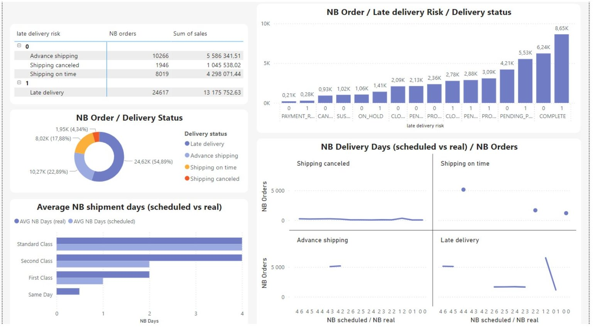
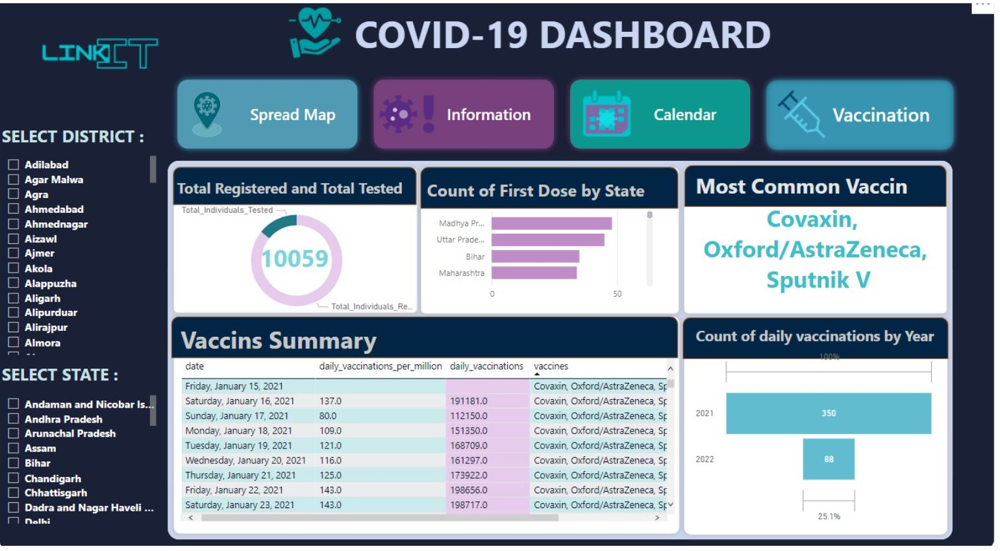
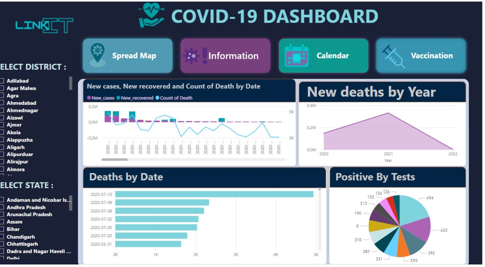

Je conçois, développe et maintiens des systèmes web en production, de l'API à l'interface, de la base de données au serveur. Mon parcours en Business Intelligence me permet de construire des fonctionnalités fiables, pensées pour la donnée.
Trois plateformes réelles, de la boutique à fort catalogue à la plateforme de location développée de zéro.
Plateforme e-commerce d'électronique à grande échelle : plus de 10 000 produits et des showrooms à Tunis, Sfax et Sousse. J'en assure le développement, la maintenance, les performances et la stratégie SEO.
Voir le site wiki.tn →Nouvelle plateforme e-commerce dédiée au gaming : PC gaming, composants, périphériques, outil de configuration « Build », sections e-sport et blog. J'ai contribué à son lancement et à son développement, avec tout le contenu SEO des catégories. Le site a été indexé par Google quelques jours après sa mise en ligne.
Voir le site krypta.tn →Plateforme de location de voitures développée de zéro, backend et frontend, avec NestJS et Next.js : site public de réservation et back-office d'exploitation. J'assure aussi l'administration du serveur et des services de l'agence. Le projet est en cours de développement.
Du pipeline de données au tableau de bord : modélisation, indicateurs clés et visualisations pensées pour la décision.
Projet de fin d'études avec ITSS Global, en partenariat avec l'ATB. Système ETL (SSIS) pour structurer les transactions bancaires, modèle de machine learning en Python pour détecter les transactions frauduleuses, et dashboards Power BI de suivi.



Analyse de la performance logistique, des ventes et de la segmentation clients, avec navigation par onglets : livraison, ventes et rentabilité, segmentation.


Dashboard de suivi de la pandémie : cas, décès, vaccination par état, prédiction des pics et analyse de sentiments sur les vaccins à partir de tweets.


Parlons de votre site, de votre application ou de vos tableaux de bord. Je réponds rapidement.